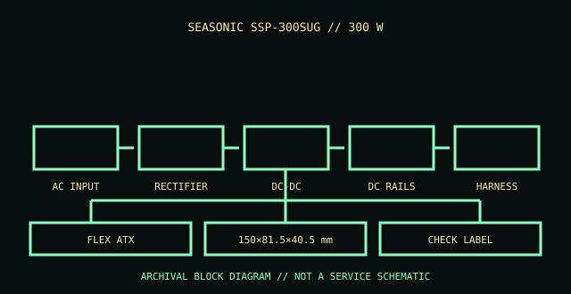

[ POWER CONVERSION // IDENTIFIED MODEL ]
Seasonic FLEX SUG 300 W (SSP-300SUG)
Seasonic FLEX SUG industrial 300 W, model SSP-300SUG. This record is bounded to the named unit, standard revision, or model family below; nearby model names and replacement parts are not presumed equivalent.

HIGH-VOLTAGE SAFETY: Unplug before external inspection. Never open a power supply. Dangerous voltage can remain inside after it is disconnected. Do not attempt internal repair; use qualified service or replace the unit.
Verified identity & specifications
| Catalog identity | Seasonic FLEX SUG industrial 300 W, model SSP-300SUG |
|---|---|
| Form factor / era | Flex ATX / 300 W industrial PSU |
| AC input | 100–240 V AC, 50/60 Hz; check the exact label. |
| DC output rating | +3.3 V 10 A; +5 V 14 A; +12 V 25 A; −12 V 0.3 A; +5 VSB 2 A; 300 W maximum combined output. |
| Mechanical envelope | 150 × 81.5 × 40.5 mm (L × W × H), Flex ATX form factor. |
| Connectors / interface | Fixed ATX motherboard, CPU, and peripheral leads; use the exact data sheet for harness configuration. |
| Revision differences | The official Seasonic FLEX SUG family is a Flex ATX unit, not TFX. Check the exact label and issue-specific data sheet; do not substitute another 300 W model by wattage alone. |
Compatibility & safe handling
- Match full model, suffix, region, revision and DC output label to the official documentation. Rated total watts alone do not establish rail or transient compatibility.
- Before replacement, confirm AC input range, rail current/combined limits, motherboard signaling and pinout, mechanical envelope, fasteners, cooling direction, and every required connector.
- Never open the PSU, defeat protective earth, or probe its internals. Do not energize a wet, cracked, corroded, burned, modified, or unidentified supply.
- Modular cable pinouts are not standardized at the PSU end. Use only cables expressly approved for this exact model/revision; matching plugs can have different wiring.
Model and revision notes
The official Seasonic FLEX SUG family is a Flex ATX unit, not TFX. Check the exact label and issue-specific data sheet; do not substitute another 300 W model by wattage alone.
Seasonic FLEX SUG official page and SSP-300SUG datasheet; preserve the exact model and revision-specific document.
Archival notes
Archive label, airflow direction, mounting orientation, and harness. Flex ATX fit and thermal conditions are constrained; check system integrator requirements.
Photograph the complete nameplate, assembly/model code, revision/date code, input selector if present, cable ends and mounting side. Separate observed label data from published specifications and preserve the referenced manual issue.
Manufacturer / standards references
- Seasonic FLEX SUG product family and SSP-300SUG documentationSeasonic FLEX SUG official page and SSP-300SUG datasheet; preserve the exact model and revision-specific document.
- Intel — ATX / ATX12V Power Supply Design GuideStandards reference for the ATX electrical/mechanical family; use the revision specified for the product. Historical IBM supplies are not ATX and must not be adapted on this basis.
The exact nameplate and corresponding manufacturer manual remain controlling for regional and hardware revisions.